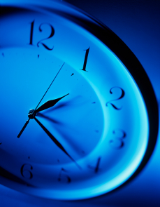

precious sweet juicy tender wonderful hearts..!
Let's dance to our hearts--our precious hearts!
Our hearts that give us so much joy. Our hearts that steer us in the direction of our happiness.

When we dance our hearts, we heal them, we massage them, we give them permission to feel. Those of you who have attended a dance already know how light spirited things get when we dance together. When we become like children giving ourselves permission to play and feel whatever we feel, our hearts open up and our spirits soar. Taking yourself dancing is a gift from your mind to your body and your soul.
 In Dance to the Present, you’ll be invited to turn your inner eye towards different aspects of your life and unwrap them to see what gifts they hold for you.
Dance is an ecstatic portal into ourselves. If we allow ourselves to be fully present in the moment we are surprised by the treasure trove of boxes within boxes that is revealed to us.